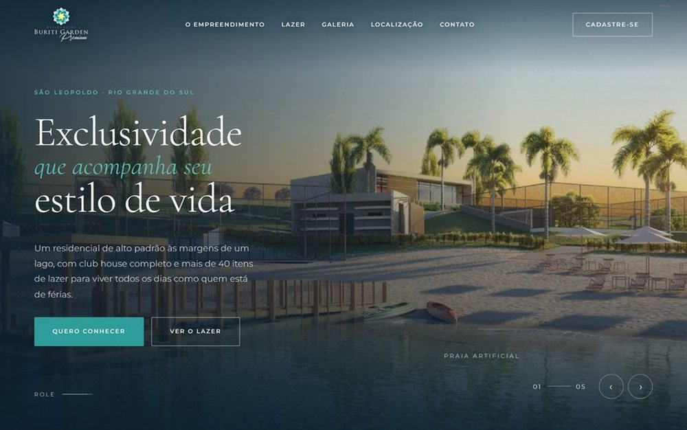
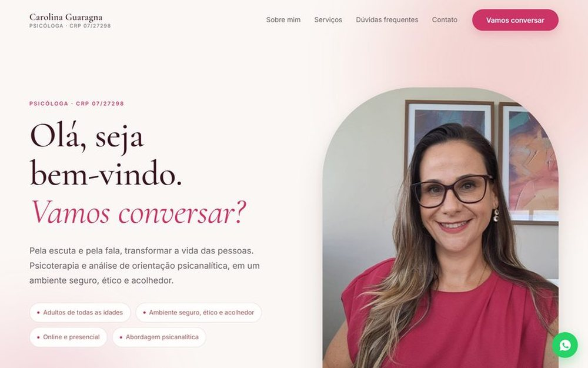

Sites e
sistemas
Site novo do zero, loja virtual ou sistema sob medida. Código próprio, sem construtor.
Ver no portfólioEstúdio de marca e desenvolvimento — Novo Hamburgo / RS
Seis negócios no ar,
todos clicáveis aqui
Site, identidade, tráfego pago e vídeo na mesma mão, do briefing até a publicação. Seis frentes que normalmente vivem em fornecedores diferentes, tocadas pela mesma pessoa.
Site novo do zero, loja virtual ou sistema sob medida. Código próprio, sem construtor.
Ver no portfólioMarca, tipografia, paleta e os materiais que sustentam a promessa em cada ponto de contato.
Como trabalhoCampanhas montadas e acompanhadas mês a mês, com leitura de resultado e ajuste de rota.
Ver no portfólioO lead que chega pelo site entra no CRM e não se perde. Integração e fluxo ponta a ponta.
Ver no portfólio




Método,
na ordem
04
01
Mercado, concorrência e o que seus clientes já dizem sobre você. Uma leitura honesta de onde a marca está.
02
Para quem, contra quem e com que promessa. É a etapa que define preço, discurso e o que não fazer.
03
Marca, verbal e visual: nome, identidade, tom de voz e os materiais que sustentam a promessa.
04
Conteúdo e mídia paga levando a marca para fora, com leitura de resultado mês a mês.
06
negócios no ar, do site à gestão de tráfego, todos clicáveis nesta página.
O estúdio
Vexillum era o estandarte erguido à frente da legião romana: o sinal que dizia quem avançava e para onde. É o que construo para marcas que já têm produto bom e ainda não têm quem as siga.
IA entra no fluxo como ferramenta, nunca como piloto automático: ela acelera o trabalho pesado, e a curadoria e a decisão do que fica são minhas.
"[Depoimento de um cliente: uma frase curta sobre o que mudou depois do trabalho.]"